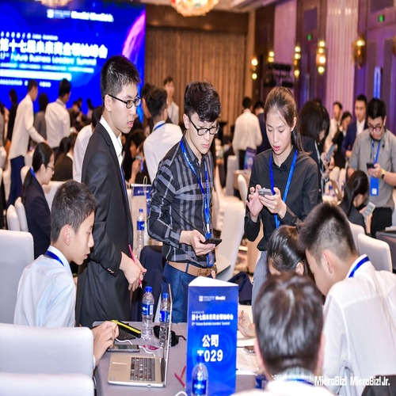

Tang-Hung YAO
My name is Tang-Hung YAO and I come from Taiwan. I graduated from Washington High School in Taichung, Taiwan. I am currently a first-year student in University of California, Riverside. I am majoring in pre-business for my first year, and I want to focus in information system for my future profession. Ever since I was young, I have got interested and decided to study in business-related majors because of my surrounding environment. Instead of general business majors, I want to study a specialty as information system, which I can learn various concrete business and technical skills. Companies nowadays need to know how to use technology to make their business more efficient. Since my family have their own business, I am willing to help the company to use technology and become more competitive in the marketplace by applying to the knowledge of information system in the future. It will also be beneficial if I want to create my own business because the major will be a good balance between technical knowledge and business knowledge.
Whenever winter and summer vacations come, I have assisted my family’s textile business to manage some digital and technical operations on computer. My main work is to type in the data of financial accounts and manage the information about the products. I have also helped my aunt’s firm to create an online shop by using a website called Weebly. Although it is not complete and professional, I have spent a lot of time watching the tutorial videos and research for the way to establish a beautiful and convenient website. These experiences have contributed to my understanding about the use of information system and technologies. Until now, I have taken many business-related courses to pursue and establish more knowledge about information system, such as AP Microeconomics, AP Calculus, International Business, and Organizational Behavior. AP Microeconomics has provided me the information about the fundamental economic concepts and the interaction between economy and decisions in the market place. AP Calculus teaches me the numerical data analysis, and it is useful in market research, operations and control systems, finance, and supply chain management. Since the AP course is designed by college level coursework, I have gained the advantage in preparation for the college. Additionally, the International Business and Organizational Behavior courses have enhanced my understanding of global markets, global economic, and leadership in the business.
I had also participated in the 17th MicroBiz! Future Business Leaders’ Summit in Shanghai, China during the summer vacation in 2019. This was a national business competition. My position was being a sale in the company. Being a sale, my job was to help to company to earn profit. I had conducted market research and bids for purchase orders. I did all my work through the network system of my company. The summit helped me to realize the real business world that was very competitive so every position was important to cooperate with each other. It established my business foundation and gave me some concept about a company.
Experience
Volunteer
• Build toilet for the poor
• International volunteer in Inner Mogolia
• International volunteer in Cambodia
Captian
• Managed the school team
• Led physical and tactical training
• Participated in a national competition representing the city
• Learned different tactics
Education
Washington International High School in Taichung
University of California Riverside
Portfolio
